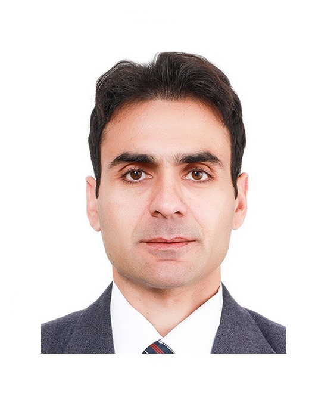

Low-latency transport
Transport protocols, multilevel congestion feedback, ECN, AQM, and learning-assisted control for immersive and interactive services.
Computer systems · Intelligent networking · Edge–cloud computing
Postdoctoral Researcher at ETRI · IEEE Senior Member
I design intelligent, low-latency networked systems—from transport and congestion control to programmable networks and Kubernetes-based resource orchestration.

About
I am a computer systems and networking researcher with more than a decade of experience across government-funded research institutes and higher education. At ETRI, my work focuses on high-performance transport, congestion control, programmable networking, and performance-aware edge–cloud orchestration.
My academic profile connects fundamental network design with hands-on experimentation using Kubernetes clusters, Linux servers, physical switches, simulators, emulators, and performance-monitoring tools. I also bring experience in undergraduate teaching, graduate mentoring, international collaboration, patents, and applied technology transfer.
Research
From transport-layer mechanisms to intelligent infrastructure control, my work targets measurable performance for latency-critical applications.
Transport protocols, multilevel congestion feedback, ECN, AQM, and learning-assisted control for immersive and interactive services.
Policy-driven Kubernetes resource orchestration and auto-scaling informed by workload, queueing, latency, and system performance.
SDN, P4, SmartNICs, AI data-center networking, and high-performance RDMA-based systems.
Named Data Networking, content retrieval, producer mobility, broadcast mitigation, and vehicular communication.
Selected projects
Intelligent, policy-driven Kubernetes orchestration using workload, queueing, latency, and resource-performance information to maintain application-level guarantees.
Design, prototyping, simulation, and evaluation of transport and congestion-feedback mechanisms for latency-critical and interactive applications.
Mobility-management and broadcast-mitigation mechanisms for NDN-based vehicular environments, resulting in peer-reviewed publications and patents.
Publications
Umar Islam, Fakhrud Din, Anwar Ul Haq, Inayat Ali*
DOI ↗Inayat Ali, Seungwoo Hong, Tae Yeon Kim
DOI ↗Inayat Ali, Huhnkuk Lim
Paper ↗Mansoor Iqbal, Sadia Waheed, Inayat Ali*, et al. · The Journal of Supercomputing
DOI2025 International Conference on Electrical, Communication and Computer Engineering
PaperInayat Ali, Seungwoo Hong, Taesik Cheung · Applied Sciences 14(19)
DOIInayat Ali, Seungwoo Hong, PyungKoo Park, Tae Yeon Kim · ACM NOSSDAV
Inayat Ali, Seungwoo Hong, Pyungkoo Park, Tae Yeon Kim · ICUFN
PaperInayat Ali, Huhnkuk Lim · Mobile Information Systems
DOITrajectory
Electronics and Telecommunications Research Institute (ETRI), Daejeon, South Korea
KISTI and the University of Science and Technology (UST), Daejeon · CGPA 4.15/4.5
Comwave Institute and COMSATS University, Abbottabad, Pakistan
COMSATS University · CGPA 3.61/4.0 · Academic Silver Medal
Academic leadership
Undergraduate teaching across Object-Oriented Programming, Computer Networks and Communications, Advanced Topics in Computer Networks, and Introduction to Telecommunication Systems.
Mentored three PhD- and Master's-level researchers in problem formulation, methodology, experimentation, analysis, and publication. The work led to three peer-reviewed journal papers as corresponding author.
Research collaborations across South Korea, Pakistan, Cyprus, and Turkey, connecting systems, networking, security, and applied machine-learning expertise.
Teaching interests
Technical expertise
Systems Kubernetes, Linux, network switches, containers
Programming Python, C++, C#, P4
Experimentation NS-3, Mininet, ndnSIM, Packet Tracer
Innovation & service
US and Korean patent protection for name-centric broadcast mitigation in vehicular NDN, plus a published Korean application for reinforcement-learning-based congestion control.
Contributed to an ETRI technology-transfer activity for time-sensitive 5G/6G applications including V2X, XR, and interactive holograms.
Co-developed the research concept, methodology, and work plan for a successful Korean government-funded research proposal.
Reviewer for IEEE Internet of Things Journal, IEEE Access, Computer Communications, IEEE TNSE, Journal of Supercomputing, Scientific Reports, and Computers & Electrical Engineering.
News
New article on heterogeneous federated learning for privacy-preserving IoT intrusion detection published in Transactions on Emerging Telecommunications Technologies.
Article on event-driven localization in wireless sensor networks published in The Journal of Supercomputing.
Elevated to IEEE Senior Member.
Multilevel network-assisted congestion feedback work published in Computers & Electrical Engineering.
Personal
A space for conference moments, lab life, travel, and the people who make the journey meaningful.




Replace the sample paths above with your own photographs. Suggested themes from your current gallery include Paris, Switzerland, Rome, Amsterdam, and PhD-defense memories.
Contact
Electronics and Telecommunications Research Institute
Daejeon, Republic of Korea